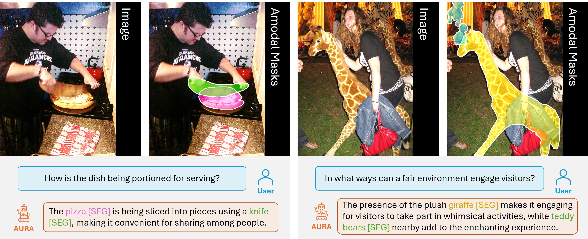
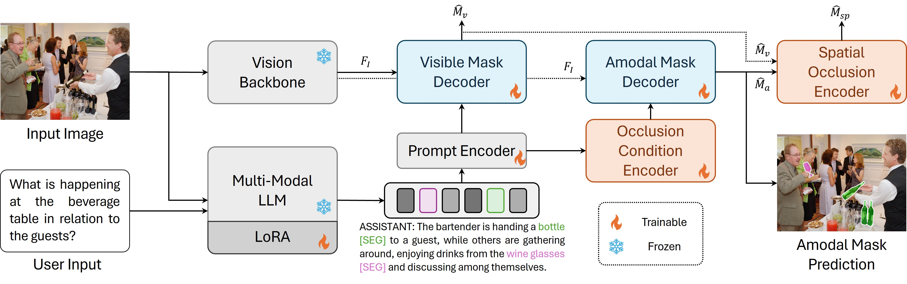
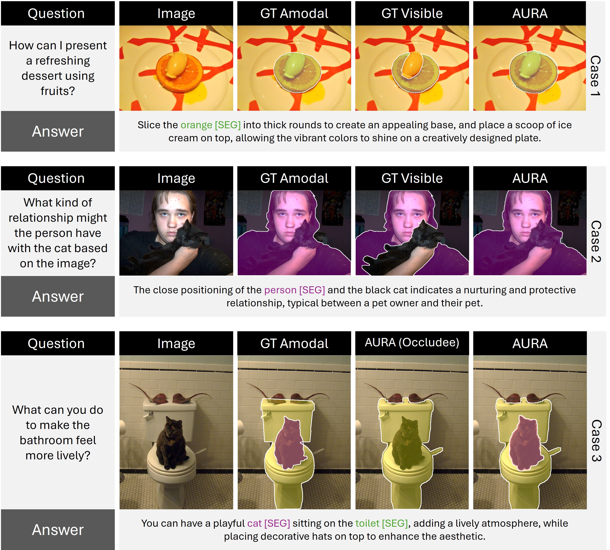

Abstract
Overview
Amodal segmentation aims to infer the complete shape of occluded objects, even when the occluded region's appearance is unavailable. However, current amodal segmentation methods lack the capability to interact with users through text input and struggle to understand or reason about implicit and complex purposes. While methods like LISA integrate multi-modal large language models (LLMs) with segmentation for reasoning tasks, they are limited to predicting only visible object regions and face challenges in handling complex occlusion scenarios. To address these limitations, we propose a novel task named amodal reasoning segmentation, aiming to predict the complete amodal shape of occluded objects while providing answers with elaborations based on user text input. We develop a generalizable dataset generation pipeline and introduce a new dataset focusing on daily life scenarios, encompassing diverse real-world occlusions. Furthermore, we present AURA (Amodal Understanding and Reasoning Assistant), a novel model with advanced global and spatial-level designs specifically tailored to handle complex occlusions. Extensive experiments validate AURA's effectiveness on the proposed dataset.
01 · Figure
We introduce AURA, a multi-modal approach designed for reasoning the amodal segmentation mask including both visible and occlusion regions based on the user's question. AURA can deduct the implicit purpose underneath the question and response with the textual answer along with predicted amodal masks for various objects.

02 · Figure
The Proposed AURA Approach

03 · Figure
Experimental Results Visualization

Citation
BibTeX
@inproceedings{li2025aura,
title={Unveiling the Invisible: Reasoning Complex Occlusions Amodally with AURA},
author={Li, Zhixuan and Yoon, Hyunse and Lee, Sanghoon and Lin, Weisi},
booktitle={Proceedings of the IEEE/CVF International Conference on Computer Vision},
year={2025}
}